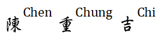

I'm  (William)
Visiting Assistant Professor, National Institute of Informatics, Japan
Recruiting - NLPFin Group
We are currently seeking researchers/students to join our group. To apply for the positions of Intern, Research Assistant, and Postdoctoral Fellow, please send your C.V. to c.c.chen@acm.org. Please refer to NLPFin Group for more details.New Book - Agent AI for Finance
From Financial Argument Mining to Agent-Based Modeling Open AccessRecent Professional Activities
2026
Organizer of FinArg-3, NTCIR-19 SiteOrganizer of RegCom, NTCIR-19 Site
Organizer of Live Commentary Planning and Generation, GenChal @ INLG-2026 Site
2025
Founder of ACL SIG-FinTech SiteProgram Committee Co-Chair, NTCIR-18 NTCIR
Organizer of FinNLP, EMNLP-2025 Site
Organizer of AgentScen, IJCAI-2025 Site
Recent Talks
Human–Agent Teaming for Higher-Order Thinking Augmentation, IJCNLP-AACL Tutorial, 2025 SiteHuman-Centric Evaluation for Financial Decision-Making, XAI-FIN-2025 (ICAIF-2025) Site
Information Retrieval in Finance: Industry and Academic Perspectives on Innovation, SIGIR Tutorial, 2025 Site
From Disinformation to Broken Promises: The Challenge of Truth Verification, ELLIS, 2025 Site
LLMs for Complex Insight Generation: Possibilities and Challenges, Advances in Financial AI Workshop (ICLR-2025) Site